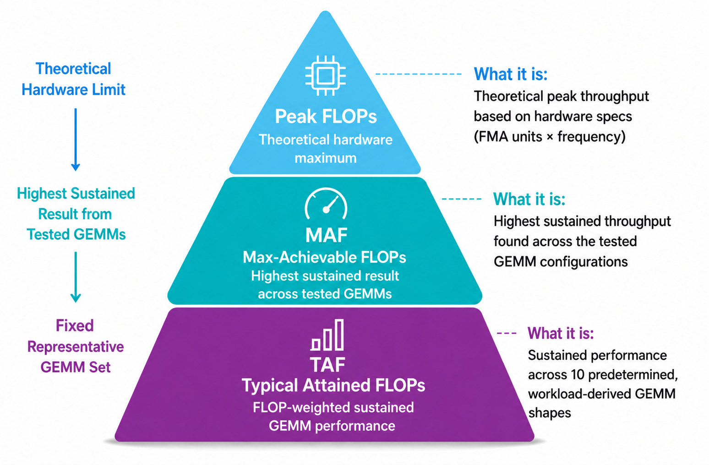

一个FLOPs数字讲不全GPU的性能故事：理论天花板、最高持续吞吐、真实形状上的持续吞吐，是三个不同的问题。AMD ROCm博客这个系列的前两篇讲了Peak FLOPs与MAF，这篇引入第三个指标TAF（Typical Attained FLOPs）。
TAF的思路很实在：测试前先固定一组来自真实负载的GEMM形状，每个形状跑满30秒，最后按FLOP加权调和平均，不给挑最优形状留操作空间。MI325X的实测数字和解读方法，下面逐一拆开。
现代AI加速器每秒能执行天文数字级的浮点运算，但单个FLOPs数字很少讲全性能故事。这个系列的前两篇讲了AMD Instinct GPU的Peak FLOPs与Max-Achievable FLOPs（MAF），新引入的第三个指标是Typical Attained FLOPs（TAF）。TAF在测试前固定的代表性GEMM集合上测FLOP加权的持续吞吐。目标不是取代Peak FLOPs或MAF：每个指标回答不同的问题，合在一起才是GPU算力性能的完整视图。
三个指标、三个不同的问题：Peak FLOPs回答GPU的理论算力天花板是什么；MAF回答测过的GEMM尺寸里GPU能达到的最高持续吞吐是什么；TAF回答在一组多样的GEMM尺寸上，GEMM性能的合理目标是什么。
Peak FLOPs从GPU架构算出来：计算单元数、每周期操作数、最高频率。它是重要的上界，但不是持续应用性能的预测。MAF测的是持续性能而非理论最大：测多个GEMM尺寸，报最高的一项，代表GPU优化后的持续算力天花板。但打出最高MAF的那个GEMM形状可能特别适合这张卡，未必是某个应用实际用的形状。TAF换了个测法：测试前先固定一组代表性GEMM形状（取自真实负载，这里是DeepSeek V3），最终结果里每个形状按FLOP加权调和平均。这压掉了"挑最优形状"的偏差，给用同一组workload形状比卡提供了统一基准。

TAF在预定的GEMM负载、标准化的测试条件下测持续浮点吞吐。和MAF报测过配置里的最高值不同，TAF把10个预定的代表性形状全算进去，报的是整个GEMM集合上FLOP加权的持续性能，而不是某个特别讨好的形状的性能。
TAF是标准化的持续GEMM算力度量，不是端到端应用性能的直接度量。它是推理GEMM部分的算力侧指标，和影响端到端推理的其他因素并列。现代推理负载，尤其是大模型的decode与token生成阶段，更可能卡在显存带宽、KV cache访问、通信开销、延迟与token顺序依赖上，而不是原始算力。所以TAF的差异在端到端吞吐/延迟上可能只打出小改进，如果瓶颈在管线别处。TAF刻画标准条件下的持续GEMM算力，应用整体性能取决于算力、显存、通信与软件栈的综合效率。
MI325X的结果用一组固定的10个代表性GEMM形状，取自DeepSeek V3：5组预定的 (N,K) 对，各在两个M值（M=32与M=32768）下测，得到10个 (M,N,K) 形状：(32, 2112, 7168)、(32, 3072, 1536)、(32, 7168, 2048)、(32, 4608, 7168)、(32, 7168, 256)、(32768, 2112, 7168)、(32768, 3072, 1536)、(32768, 7168, 2048)、(32768, 4608, 7168)、(32768, 7168, 256)。
每个形状用mblas-bench跑30秒，得到实测持续性能P_i。每种数据格式单独测一轮，得到FP16、BF16、非缩放FP8各自的TAF。
每个GEMM i的浮点操作数：F_i = 2 × M_i × N_i × K_i。等效执行时间：t_i = F_i / P_i。最终TAF是10个形状的FLOP加权调和平均：TAF = (Σ_i F_i) / (Σ_i (F_i / P_i))，即总FLOPs除以总等效执行时间。
30秒是为拿到稳定的持续性能值，不在TAF计算里相加。因为按数学工作量加权，FLOP越多的GEMM对最终结果贡献越大。同一套10形状用于该方法论下评估的每张GPU，比较基准一致。
影响GEMM性能的不只是矩阵尺寸，输入矩阵里的数值也有影响：不同的数据模式改变开关活动、功耗与持续频率，进而影响实测吞吐。
为保持一致，当前MAF与TAF测试用正态分布初始化输入矩阵，值直接按目标数据格式生成；非缩放FP8的缩放因子置1。
之前发表的MAF结果用trig_float初始化：这种结构化输入模式在某些数据格式下开关活动与功耗更低，GPU能跑在比代表性数据更高的频率上。当前测试改用正态分布初始化，更接近AI负载里的典型数值范围。
初始化方法不同，老结果和当前MAF/TAF结果不能直接比。当前结果用同样的正态分布初始化，更容易看清两个指标的差异。初始化方法、测试时长、系统配置、运行条件一致，结果可复现；但MAF与TAF仍是GPU级度量，不直接预测端到端应用性能。
表1是一张AMD Instinct MI325X在FP16、BF16、非缩放FP8下的实测吞吐：TAF FP16 606 TFLOPs，TAF BF16 616 TFLOPs，TAF FP8（非缩放）1143 TFLOPs。这是按规定的代表性GEMM集合与运行条件测出的持续GEMM吞吐，是Peak FLOPs与MAF之外的又一个GPU算力视角。不应解读为竞争排名，也不是训练/推理端到端性能的直接预测。
TAF是在真实负载形状上度量、比较持续GPU性能的有用代理。它补MAF而不是取代：MAF是测过的GEMM配置里GPU能达到的最高持续吞吐，TAF是固定代表性GEMM集合上的持续性能。两个都有用，因为回答不同的问题。
TAF的目的不是造一个离Peak FLOPs更近的数字。Peak FLOPs定义理论天花板，MAF度量优化后的持续算力天花板，TAF度量完整代表性GEMM集合上的持续吞吐。
TAF仍是算力度量，不是端到端应用基准。它不直接预测训练时间、推理延迟或每秒token数。测完整硬件软件系统的性能，还是要靠应用级基准。
FP16：Peak FLOPs 1300 TFLOPs，MAF 787 TFLOPs，TAF 606 TFLOPs，TAF约为MAF的77%；BF16：1300、831、616，74%；FP8：2610、1409、1143，81%。Peak FLOPs取自MI325X规格书的dense非稀疏公布值。
数字差异正好说明三个指标回答不同的问题。Peak FLOPs是理想利用率与最大标称工况下的理论天花板。MAF跑多个 (M,N,K) 尺寸的GEMM测试，只报最高的一项。TAF比MAF低，因为它把10个预定的workload形状全算进去，而不是只挑最高的一项。MI325X的TAF约为对应MAF的74% 到81%。
TAF更低不代表GPU变慢了：TAF是度量方法，不是运行模式。差异说明，在一个讨好的GEMM形状上打出的最高持续吞吐，未必代表更广的workload形状集合上的性能。Peak到MAF看的是理论与最大持续性能之差；MAF到TAF看的是最优GEMM形状与完整代表性集合上持续性能之差。
参考：https://rocm.blogs.amd.com/artificial-intelligence/taf-blog/README.html